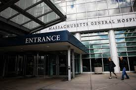
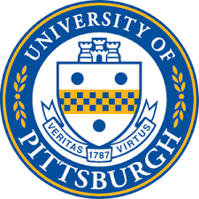

CLASSROOM ATMOSPHERE
Hands-on classes will help you master your skills!
CLINICALS
Clinical in-person experiences will give you the confidence to be a great nurse.

RENOWNED HOSPITALS
These programs gives you great exposure to world renowned hospitals.
PROGRAM
An Accelerated Nursing Program
An accelerated bachelors of science in nursing program gives a chance to individuals who want to pursure nursing as a career. Through a fast-tracked program, you can become a nurse in as little as 11 months. Programs typically range from 11 to 24 months! It is very flexible since you can choose programs that would be more tailored to your time line!
An undergraduate degree is needed in any area of studies and prerequisities must be completed prior to start. This is a great option for individuals because it allows them to join a job market with great salaries and with a high demand for nurses. Accelerated BSN programs have shown great results in educating great nurses and preparing very well to care for patients. In these types of programs, students are prepared in classroom settings like the typical lecture style classes, hands-on labs, and immersive clinicals in hospitals. The different clinicals will help facilitate your learning, while also exposing you to different settings and patient populations. This will allow you to learn bed side manners and how to communicate and support patients and their loved ones during the most vulnerable times of there lives. Additionally, these clinical rotations can help decipher the different types of nursing that you may want to further specialize in. There is a lot of diversity and opportunities in the nursing world today and the accelerated BSN programs help you to become of this world. From bedside nursing to private facilities to travel nursing you can have a lot of freedom and areas to grow and explore.
Typical prerequisities include:
- Human Anatomy and Physiology I and II + labs
- Human Nutrition
- Microbiology + lab
- Statistics
- Chemistry + lab
- Biology + lab
- prerequisities at different schools vary but these are the standard in the majority of the programs
- other prerequisities may inlude Pathophysiology, Genetics, Organic Chemistry/Bio-chemistry, Developmental Psychology
University of Pittsburgh

ABOUT ME
Get to know me!
Hi, my name is Miranda Yee. I currently am a senior at the University of Pittsburgh. I will be graduating with a Psychology degree and economics minor in Spring 2023! I have always had an interest in nursing, but was never certain that I wanted to pursue it as a career until the end of my sophomore year. I felt that there was no way to catch up to the nursing students my age and that I would have to repeat college. Until I learned about accelerated BSN programs. I learned more and more about these programs and the thorough education along with the fast-tracked ciricullum ensured me that this would be a great option for me!
Personal Statement
-Why I want to be a nurse-
Growing up I was always a bit more educated on the medical field than most kids. My parents were both in the health care systems and always told us their crazy stories of work experiences or their medical school horrors. I always found myself more interested than my sibilings in my parents' experiences in the hospitals. Beginning in sixth grade, my grandfather began having medical issues, strokes,complications from the strokes, diabetes, and heart issues. I was always concerned with his health and found myself always wanted to help him as much as I could from that age forward. It was never a chore or a burden to me and taking care of people always came naturally to me. My grandfather only spoke spanish so I was involved in a lot of his medical issues whether it was bringing him to his appointments or reading his pill or medical letters to him. Emergency hospital visits were always very frightening for me, however, I had a lot of respect for the nurses and could never express my gratitude to them for taking such good care of my grandfather. Every visit was a bit scary, but was always made a bit less scary knowing that he was in the hands of the nurses. Being exposed to that environment always made me want to do something related to helping people, but I was never sure that nursing was for me. As I went through college and heard about all the new things my nursing friends were learning and getting to do, I found that I was drawn to nursing. I quickly did more research on what the profession entailed and began a job as a patient care technician. As someone with no clinical experience, this was an intimidaitng job for me, but I pushed myself out of my comfort zone and embraced the fact that I would learn every shift what it takes to be a great nurse. Working on an oncology unit it has taught me a lot physically how to take care of a patient and emotionally how to deal with difficult situations. With oncology patients, you need to be prepared to deal with situations were there isn't always going to be a good outcome or an easy fix. Not only do you need to physically be able to take care of your patients, but you need to support them through a tough time. This job has taught me many things that I would never be able to learn from textbooks. I was surprised to find that the environment was so welcoming and it has made me even more excited to pursue a career in nursing.
Resume